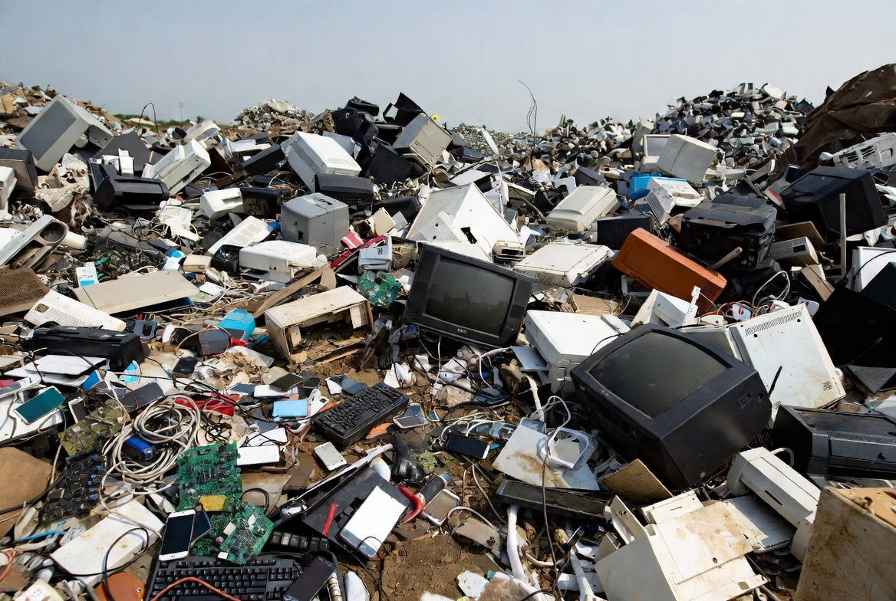
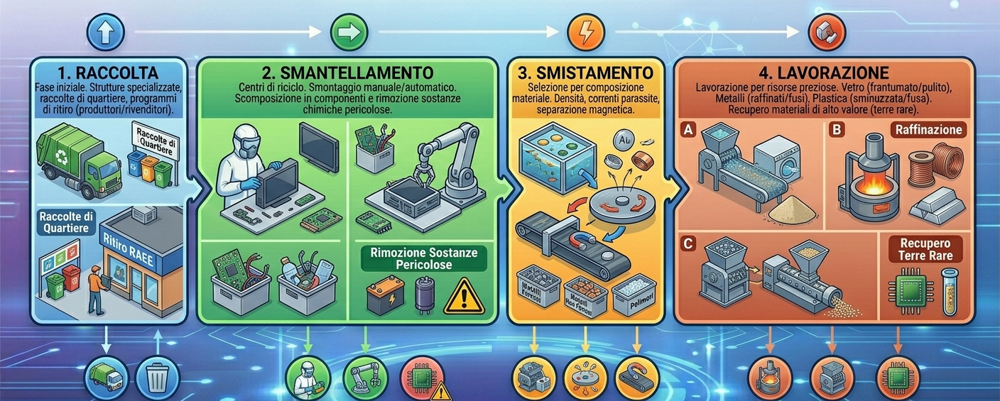

Rigenerare Smartphone e computer per l’ambiente
Rigenerare Smartphone e computer per l’ambiente

Cosa sono i RAEE
L’acronimo RAEE identifica i Rifiuti di Apparecchiature Elettriche ed Elettroniche. Questa categoria comprende tutti i dispositivi alimentati da corrente elettrica o batterie che hanno concluso il proprio ciclo di vita utile a causa di guasti, obsolescenza tecnologica o cessata necessità di utilizzo.
La Classificazione dei RAEE
- R1 (Freddo e Clima): Frigoriferi, congelatori, condizionatori.
- R2 (Grandi Bianchi): Lavatrici, lavastoviglie, forni a microonde, cappe.
- R3 (TV e Monitor): Vecchi televisori a tubo catodico, schermi LED o LCD e monitor dei PC.
- R4 (IT e piccoli elettrodomestici): Computer, telefoni cellulari, aspirapolvere, frullatori, giocattoli elettrici.
- R5 (Sorgenti luminose): Lampadine a risparmio energetico, tubi fluorescenti (neon), LED (mentre le vecchie lampadine a incandescenza non sono RAEE).

Nei rifiuti elettronici ci sono sostanze pericolose, come il piombo, il mercurio e il cadmio. Se non vengono trattate correttamente, queste sostanze possono minacciare seriamente la salute umana e l’ambiente. Alcune leggi e standard limitano la quantità di queste sostanze per promuovere una maggiore sostenibilità nei dispositivi. Quando questi materiali pericolosi vengono smaltiti in modo scorretto, possono contaminare gli ecosistemi e mettere in pericolo la salute umana, infiltrandosi nel suolo e nell’acqua. Inoltre, nei rifiuti elettronici si trovano risorse preziose, come elementi delle terre rare e metalli come l’oro, l’argento e il palladio. Riciclare e riutilizzare questi componenti non solo riduce le preoccupazioni ambientali, ma aiuta anche a preservare le risorse naturali e a diminuire la necessità di estrarre e sfruttare le materie prime.

Come vengono riciclati?
Il riciclaggio dei componenti elettronici si articola in diverse fasi, tutte finalizzate a recuperare efficacemente i materiali di valore e a ridurre gli effetti negativi sull’ambiente. I processi principali sono la raccolta, il disassemblaggio, la selezione e il trattamento.
I processi divisi in fasi
- Raccolta: La raccolta dei rifiuti elettronici è la fase iniziale del processo di riciclaggio.
Esistono diversi modi per farlo, tra cui le strutture specializzate nel riciclaggio dei rifiuti elettronici,
le raccolte di quartiere e i programmi di ritiro offerti dai produttori e dai rivenditori di elettronica.
-
Smantellamento: Dopo la raccolta, i rifiuti elettronici vengono portati
nei centri di riciclaggio e smontati manualmente o automaticamente.
A questo punto, i dispositivi vengono scomposti nei loro componenti.
Questa procedura è essenziale per recuperare le parti importanti e separare le sostanze chimiche pericolose.
-
Smistamento: Una volta smontati i prodotti, è il momento di selezionare i componenti in base alla loro composizione materiale.
I metalli, i polimeri e gli altri materiali vengono separati con metodi quali la separazione per densità,
la separazione a correnti parassite e la separazione magnetica.
-
Lavorazione: La fase finale prevede la lavorazione dei materiali separati per estrarre risorse preziose.
I componenti in vetro vengono frantumati e puliti per essere riciclati,
i metalli vengono raffinati e fusi, e la plastica viene sminuzzata e fusa per essere riutilizzata.
I materiali di alto valore, compresi gli elementi delle terre rare, vengono recuperati con tecniche specializzate.

Perché si riciclano i rifiuti elettronici?
- 1. Recupero di Risorse Preziose
I dispositivi elettronici sono vere e proprie "miniere urbane". Contengono materiali rari e costosi che richiederebbero un enorme dispendio di energia e distruzione ambientale per essere estratti di nuovo
Metalli Preziosi: Oro, argento, palladio e rame si trovano in grandi quantità nelle schede madri e nei circuiti.
- Terre Rare:
Elementi come il neodimio (usato nei magneti) sono difficili da trovare in natura e fondamentali per la tecnologia moderna.
- Efficienza: Riciclare l'alluminio, ad esempio, risparmia circa il 95% dell'energia necessaria per produrlo partendo dalla materia prima (bauxite).
- 2. Protezione della Salute e dell'Ambiente
- Sostanze Tossiche: Piombo, mercurio, cadmio e ritardanti di fiamma bromurati possono fuoriuscire dai dispositivi rotti.
- Contaminazione: Se finiscono in discarica, queste sostanze filtrano nel terreno (percolazione) raggiungendo le falde acquifere e rientrando nella catena alimentare umana.
- Riduzione delle Emissioni di CO2:
L'intero ciclo di vita di un prodotto elettronico ha un forte impatto climatico. Estrarre metalli dalle rocce emette quantità di CO2 enormemente superiori rispetto al trattamento di materiali già raffinati presenti nei vecchi computer o smartphone.
I vantaggi
- Vantaggi ambientali
- Vantaggi sociali
- Vantaggi economici
Piercarlo Vita